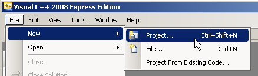
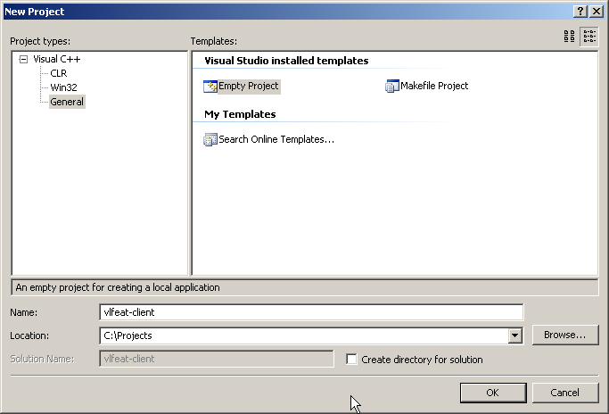
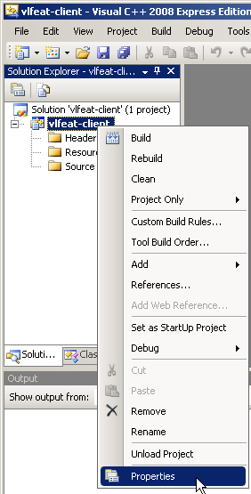
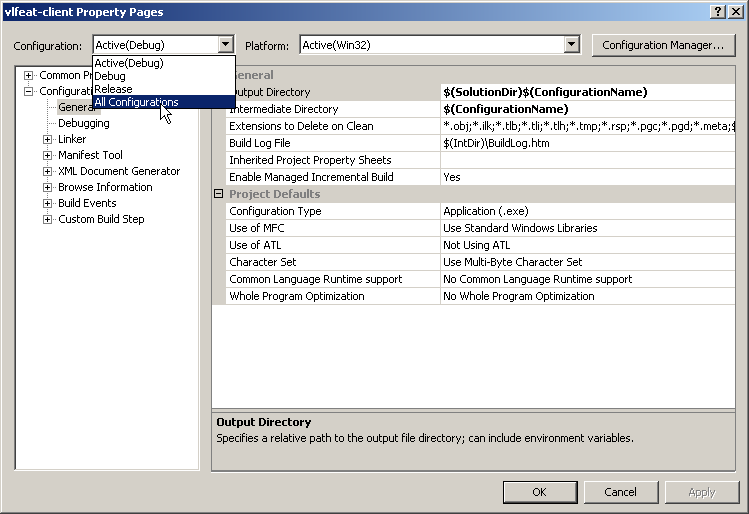
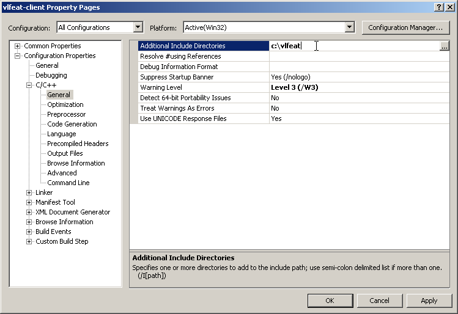
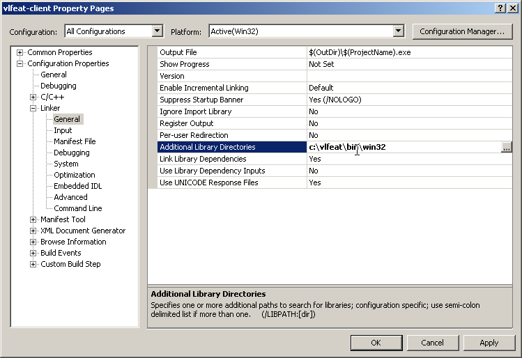
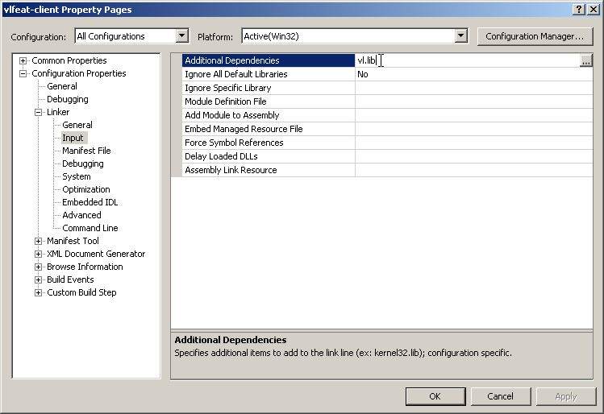
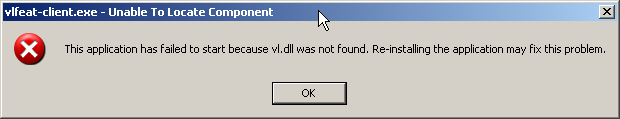
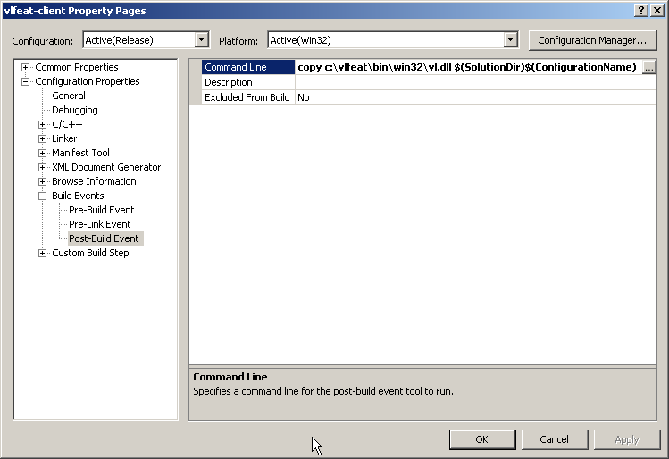
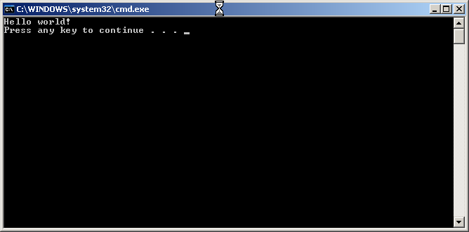

These instructions show how to setup a basic VLFeat project with Visual C++ Express 2008 on Windows XP (32 bit). Instructions for other versions of Visual Studio should be similar.
First, we create a new project called vlfeat-client.
Open Visual C++ Express 2008 and select File > New > Project
and choose General > Empty Project. Give your project a
name and location (here vlfeat-client) and click OK.


Next, we have to modify the project properties to include the VLFeat library and include directories. Right click on the project and select properties.

We want these settings to apply to both Debug and Release builds, so switch to all configurations.

Add an additional include path which points to the root of the VLFeat folder:

Add an additional library include path pointing to the bin/w32
folder in the distribution, and add vl.dll as a
dependency:


This will allow us to compile, but we will not be able to run,
getting because vl.dll will not be found:

To remedy this, we add a post-build step which copies vl.dll to the debug or release folder. Since this only needs to be done once for each project, we could instead copy the file manually.

Now that we have created our project, add a new .cpp file (right click on Source Files and choose Add > New Item) with this code:
extern "C" {
#include <vl/generic.h>
}
int main (int argc, const char * argv[]) {
VL_PRINT ("Hello world!\n") ;
return 0;
}
Build and run the project (Ctrl+F5). It should run correctly, and you should see this:
